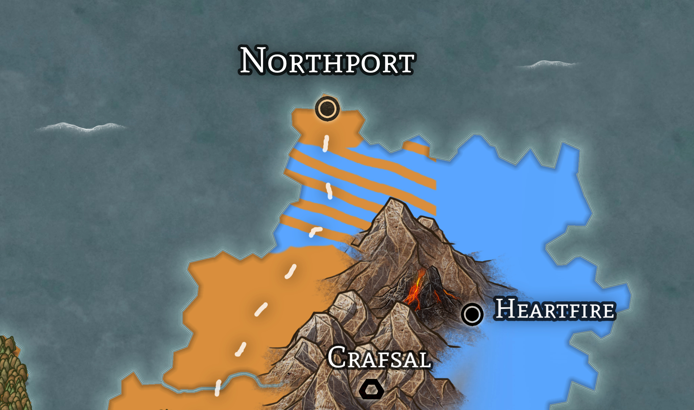

Vodenz
Welcome! Vodenz is a world that I have been building out for a bit now, and finally decided to put it up on github. I am currently using it for TTRPG's, but you are welcome to use/modify any of the information that you see here for your own purposes!
Currently I am attempting to add and organize any notes that I have written over the world in the past. There will likely be incomplete/missing sections, and some may be vague as to not spoil potential plots for any players I GM. If you would like any additional information/clarifications, please let me know!
Vodenz
Vodenz World Map

Vodenz Political Map

The Nations
Major Geographic features
Astria
Major Cities:
Society
- Astria is known for being incredibly closed off from the rest of Vodenz.
- They only trade with a few locations, and only with trusted companies
- Entry into Astria is forbidden without approval from The Shipyard or an immediate member of the royal family.
Flora and Fauna
- The flora and fauna are the least studied from any on Vodenz, mostly due to travel restrictions
- Only recently were any outsiders allowed in to study the Southern forest
- Research has shown it to be older than any forests on the mainland
- Many scholars speculate that the Darkwood is even more ancient than the Southern forest, but this has yet to be proven with any definitive evidence.
Squall's End
The capital, and largest city, in Astria.
Marnall
The Darkwood
Ancient forest in the North of Astria. Very little is known about the forest, as access is strictly forbidden, and there are incredibly strong wards which make it near impossible to enter via the Grey Ocean. It is rumored that the Astrians made deals with demons to help protect the forest.
Doria
Overview
(This is for the nation, for the City see Doria (City))
The central-most nation in Vodenz, with the largest overall landmass and highest population
Cities
Capital:
Major Cities:
Other Cities:
Government
Type: Oligarchy
- 50 members of the parliament exist
- Members are only replaced on death or resignation, and only if the current members vote them in
- Exceptions are 11 positions that come with appointments:
- North Union Master
- South Union Master
- Chief Admiral
- Commander of the Army
- Head of The Dorian Bank
- Mayor of Helvidale
- Mayor of Kosti
- Mayor of Clearmeadow
- Mayor of Hearthfire
- Dean of The University of Helvid
- Dean of The University of Doria
Allies
- Triia and Tarna
- Doria has a long history of working with the college, and they often have similar political interests.
- As Doria lacks a true mage college and the cities lack a proper army, they often will help each other in conflict
- Doria has a long history of working with the college, and they often have similar political interests.
Enemies
- Syre
- Doria attacked and took the Morathian Forest from Syre 38 Years ago
Doria (City)
(For the nation, see Doria)
Capital city of the Nation of Doria
Overview
- Largest city in Vodenz
- Total Population is estimated to be approx. 2.4 million residents.
Government
- Doria operates as an Oligarchy, with 50 chairs in the Parliament that are all controled by members of wealthy families throughout the nation.
Industry
- Massive trade industry
- Much of its trade is exporting agriculture that is grown throughout the Dorian Planes.
Military
- The Dorian military is headquartered in Doria
- The Army Commander and Chief Admiral are always members of the Oligarchy
Helvidale
Overview
-
Helvidale is the largest city in the western half of The Doria
-
Located East of [The Spine] and South of Lake Helvid
-
Home to the University of Helvid, the 4th largest university in Vodenz
-
Hub for any goods that are being transported to Dwarven cities within The Spine (including Crafsal and Pilin Pimeja)
-
Less tied to Doria and Dorian politics than the eastern portion of Doria
- Finds themselves more closely alligned with the historically neutral Crafsal and Pilin Pimeja
Kosti
Overview
- Fourth largest city in Doria
- Only Dorian location where Astrian goods can be legally imported
Hearthfire
North Helvid
Overview
North Helvid is the first major stop after exiting the spine through [Pilin Pimeja], and is the location in Vodenz where the highest percentage of dwarves live.
Trade and fishing encompass much of their economy, with some crops grown near the river, as far from the river it is too arid to grow
Dwarven Presence
- North Helvid has an excellent relationship with Pilin Pimeja and Crafsal, and has a long-standing tradition of siding with the Dwarven empire on issues, which has caused conflict with Doria in the past.
- This positive relationship extends to Helvidale, which will send envoys to North Helvid on Parliament Day, where North Helvid and The Dwarven Empire discuss matters.
Lake Helvid
Overview
Lake Helvid is located in Western Doria in-between [The Spine] and Helvidale. It is the deepest lake in Doria (the exact depth is still unknown as noone who has attempted to reach the bottom has done so successfully), and has always been a location in which researchers, scientists, and druids have gathered.
Kraina
Major Cities:
Nasol
Island of Laza
Major Cities:
Khut'ri (Khu's Might)
An Orc Stronghold and only surviving city within The Scourge.
Rohumaad
Overview
Cities
Capital: Locria
Major Cities:
Other Cities:
Government
Type: Elective Monarchy
- Current Ruler: Queen Astrid Erva
Geography
- Western Vodenz Mainland
- Bordered by:
- North: Triia and Tarna and The Grey Ocean
- East: [The Spine]
- South: The Southern Ocean
- West: The Sun's Sea
- Bordered by:
- Centered around Lake Erva
- North of Lake Erva is The Orman Forest, the oldest and largest forest in Rohumaad.
- The floodplains south of the lake are where most of the agriculture within Rohumaad is grown, and supplies the two largest cities (Locria and Stonehill)
- West of the lake are the [Blackveil Mountains]
Politics
- Doria
- At war with Doria over the Talisk region, which encoumpases the land North of The Spine

- Triia and Tarna
- Tense Neutral Relationship
Locria
Overview
Capital of Rohumaad
Angrove
Overview
- Fishing Villiage
- Population: 470
Typically a pretty quiet town, does much of it's trade with Ionia and other cities along the coast of Lake Erva.
Mountain's End
Syre
Major Cities:
Triia and Tarna
Overview
- Triia and Tarna house the largest, and easily most prestigious mage college in all of Vodenz.
- The college is over 2000 years old
- After graduation, all mages are required to serve 5 years service to the cities
- The penalty for desertion is death
- They have trained an estimated 75% of all schooled mages in Vodenz
- They maintain an iron grip on both the knowledge of magic and the export of magic items
- Especially true to cities with a college of their own.
Independant Citystates
Crafsal
Pilin Pimeja
Thuingg
Morath
Freyview
Mountain Ranges
The Spine
The Blackveil Mountains
The Shield Wall
The Frostpikes
Forests
The Orman Forest
The Morathian Forest
The Darkwood
Ancient forest in the North of Astria. Very little is known about the forest, as access is strictly forbidden, and there are incredibly strong wards which make it near impossible to enter via the Grey Ocean. It is rumored that the Astrians made deals with demons to help protect the forest.
The South-Astrian Forest
North and South Westwood
Laz
Lakes and Seas
Lake Helvid
Overview
Lake Helvid is located in Western Doria in-between [The Spine] and Helvidale. It is the deepest lake in Doria (the exact depth is still unknown as noone who has attempted to reach the bottom has done so successfully), and has always been a location in which researchers, scientists, and druids have gathered.
Everfrost
Northernmost lake in Astria. Legend says that it has not thawed for thousands of years.
Khu'sae
Lake Orman
Smallpond
Other Geographic Features
Khu'Pacc
Mount Ae
Hearthfire Mountain
The Maw
Azel
They are an omnipotent being who is seen as the progenitor of creation.
Azel is the parent of the Ael, whom they created to be the shapers and caretakers of Vodenz.
The Nyl were created after, as the creators of life on the earth.
The legends say that Azel looked over the world as its protector until The God's War, where Azel sacrificed themselves to save Vodenz, with their corpse falling to earth. Earth was thrown into the air, falling around their body. Over time their bones fused with the earth, creating The Spine of Azel, along with numerous other landmarks throughout Vodenz.
The Ael and Ael'hi
The Ael (The Ancient Gods)
The Ael were the three original children of Azel. They are the gods of the elements, and shaped the foundations of Vodenz upon which life may exist. The Ael are long gone since their war with the Nyl, so the stories say, but their raw power can still often be felt to this day.
The Ael'hi
The Ael'hi were the God-servants or demi-gods, each of whom serves a specific one of the Ael. They are linked to their Ael, and serve as the god's messenger to the people of Vodenz.
Appearance
While they supposedly could manifest as a humanoid, Ael'hi often took the appearance of a powerful animal native to the domain of their Ael.
The Ael and their Ael'hi are:
- Ulcar - God of Fire
- Ael'hi - Lem
- Allignment: C
- Levi - God of the Seas
- Ael'hi - Orka
- Allignment: C
- Sel - God of the Earth
- Ael'hi - Solar
- Allignment: L
Levi
A member of The Ael. Levi is the ancient god of the seas.
Levi's Ael'hi is Orka.
Orka
A member of the Ael'hi - Water
Ael - Levi
Sel
A member of The Ael. Sel is the ancient god of earth.
Sel's Ael'hi is Solar.
Solar
A member of the Ael'hi - earth
Ael - Sel
Ulcar
A member of The Ael. Ulcar is the ancient god of fire.
Ulcar's Ael'hi is Lem.
Lem
A member of the Ael'hi - Fire
Ael - Ulcar
The Nyl
Once the Ael had shaped the world, Azel created the Nyl. The Nyl were given the special power to create life, with Brecca given domain over the animals, while her brother Orman was given the plants.
The Nyl are:
Brecca
Orman
The God's War
The battle was between the Ael and the Nyl.
Soon after the creation of the Ael and Nyl, they started fighting over who was truely the most powerful of the gods, and thus deserved to rule over their new world. The Ael, who could level mountains or scorch entire plains, showed off their raw strength while the Nyl began to create larger and more resilient beings that could withstand the Ael's onslaught. Seeing that this could only end in the destruction of Vodenz, Azel attempted to interdict the continuing escalations, but being unable to and with the earth splintering under the onslaught of power the gods were raining down, used all of their stored power to drain the power from all of the gods, withering them and slowly killing each and every one. Impossibly weak and without the will to remain after what they had just had to do, Azel fell to earth, their shattered body becoming one with the place they had tried so hard to defend.